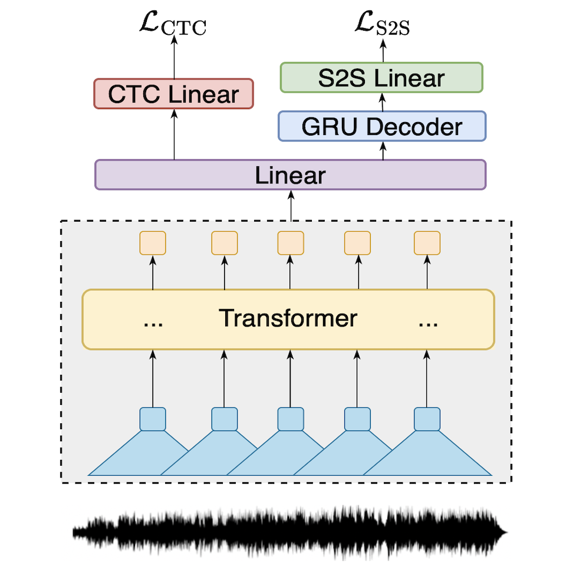
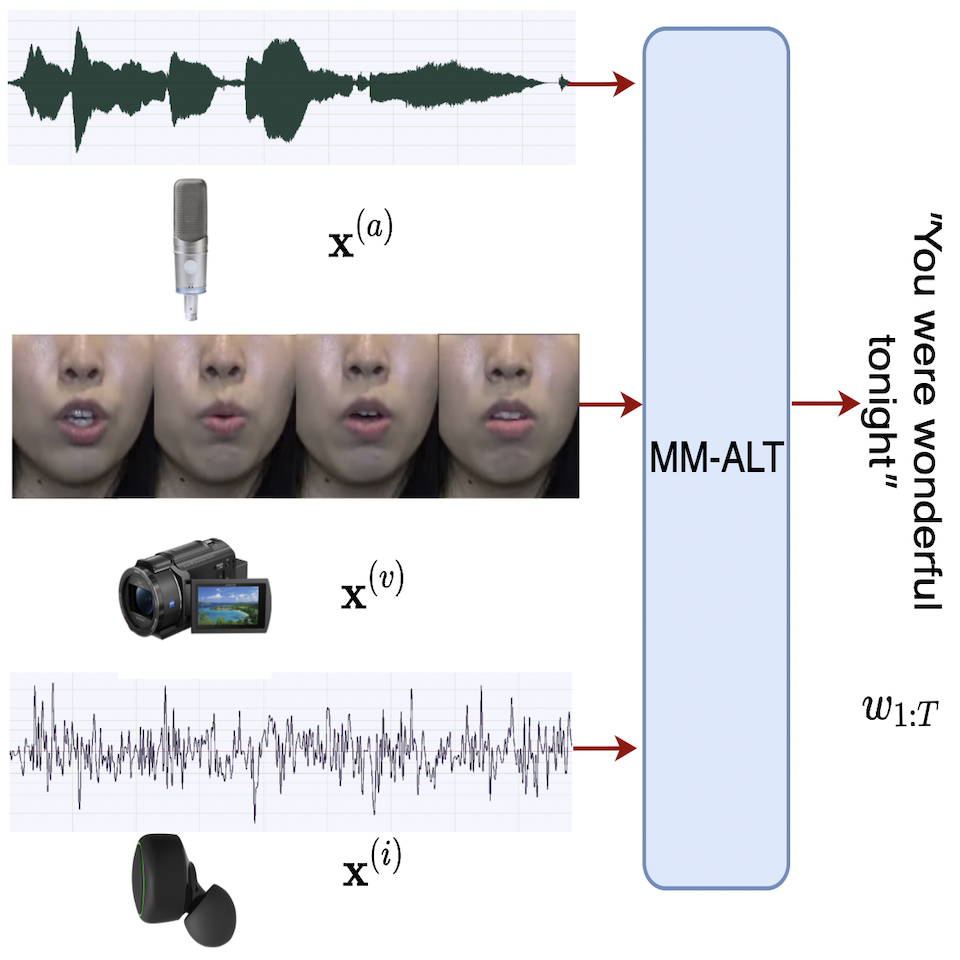
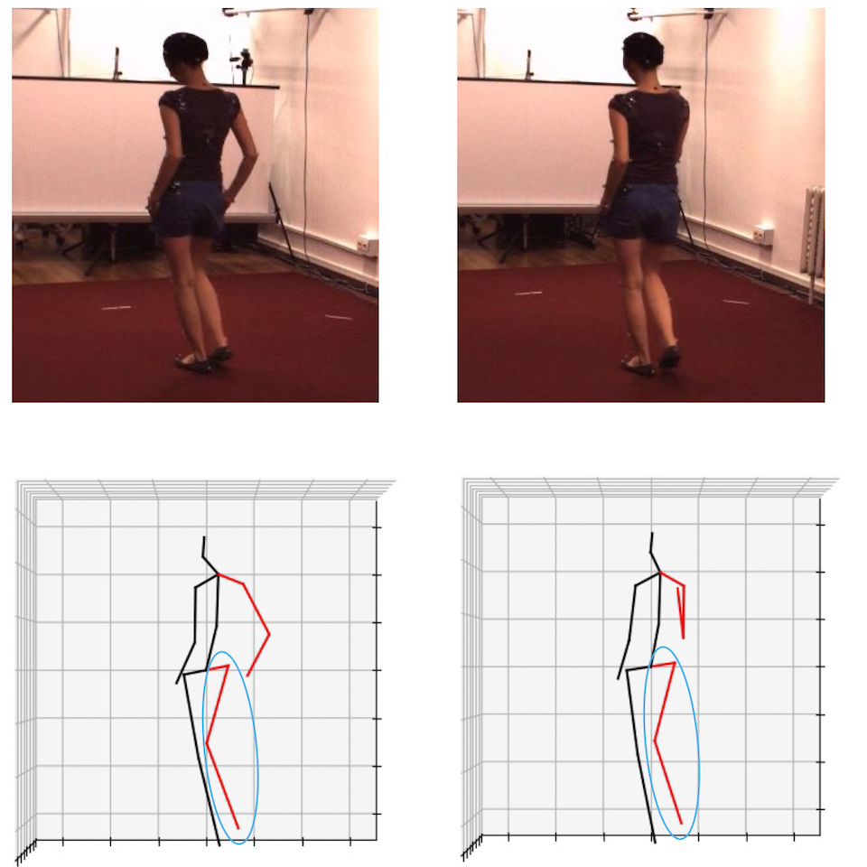
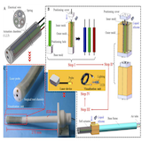

News
-
[2022.07]: One paper got accepted to International Society for Music Information Retrieval Conference (ISMIR) 2022!
-
[2022.07]: NUS Sound and Music Computing Lab has survived from a server attack and has a brand new lab website now!
-
[2022.06]: One paper got accepted to ACM International Conference on Multimedia (ACM MM) 2022!
-
[2022.05]: One paper got accepted to IEEE Transactions on Image Processing (TIP), 2022!
-
[2021.08]: I started my Ph.D. Journey at National University of Singapore!
|
|

|
Towards Transfer Learning of wav2vec 2.0 for Automatic Lyric Transcription
Longshen Ou*,
Xiangming Gu*,
Ye Wang
International Society for Music Information Retrieval Conference (ISMIR), 2022.
paper /
bibtex /
code
We proposed a transfer-learning-based Automatic Lyric Transcription solution and achieved state-of-the-art performances on benchmark datasets.
|
|

|
MM-ALT: A Multimodal Automatic Lyric Transcription System
Xiangming Gu*,
Longshen Ou*,
Danielle Ong,
Ye Wang
ACM International Conference on Multimedia (ACM MM), 2022.
paper /
bibtex /
project page /
code
We proposed a MultiModal Automatic Lyric Transcription System accepting audio, video and IMU modalities and also curated the N20EM dataset.
|
|

|
Boosting Monocular 3D Human Pose Estimation with Part Aware Attention
Youze Xue,
Jiansheng Chen,
Xiangming Gu,
Huimin Ma,
Hongbing Ma,
IEEE Transactions on Image Processing (TIP), 2022.
paper /
bibtex
We proposed part aware attention mechanism which helps a transformer-based model to achieve state-of-the-art 3D pose estimation performance.
|
|

|
Laser Endoscopic Manipulator Using Spring-Reinforced Multi-DoF Soft Actuator
Boyu Zhang,
Penghui Yang,
Xiangming Gu,
Hongen Liao
IEEE/RSJ International Conference on Intelligent Robots and Systems (IROS), 2021.
Also in IEEE Robotics and Automation Letter (RA-L), 2021
paper /
bibtex
We developed a layer endoscopic manipulator with a soft bendable tip for minimally invasive surgery.
|
You've probably seen this website template before, thanks to Jon Barron.
Last Updated July 2022.
|
|
{kind=link}